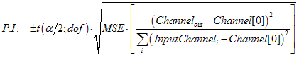
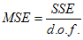
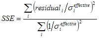
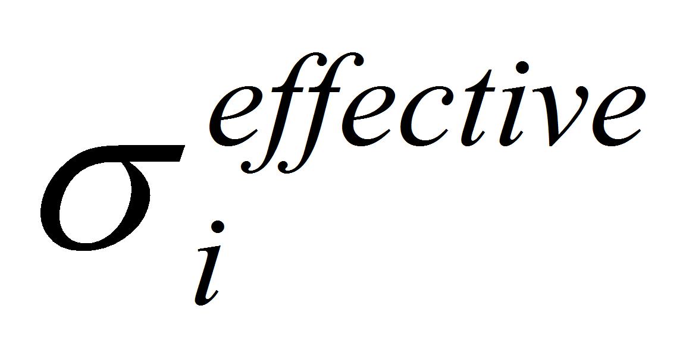

Output peaks in Spanc are specified by a reaction, a projectile excitation energy, and a channel. Output peaks are displayed in the bottom section of the main window, and are entered in a very similar fashion to the calibration peaks. Clicking 'Add Peak' in the 'Output Peaks' section displays an 'Add Output Peak' dialog.
Again, you must slide the 'Reaction' slider to the desired reaction number, even if it appears to already be selected. The projectile excitation energy is again presumed to be exact and given a default value of zero, which you may change. Channel number and uncertainty are entered just as with the calibration peaks.
Clicking 'OK' or 'Apply' creates the output peak. If a calibration fit has already been performed, the peak is added to the table in the 'Output Peaks' section. In this table, a fitted value for ρ is displayed. The excitation energy for the residual nucleus is calculated for this ρ by adding back the energy loss to the interaction point in the target, then working the two-body kinematics in reverse. The excitation energy error bar is determined from the ρ, which has its error bar calculated as described below.
Two sources of error are added in quadrature: the channel uncertainty in the output peak, and the prediction interval one gets assuming the output peak channel were known exactly. The former simply comes from multiplying the channel error bar by the slope of the fit function evaluated at the channel. The second is the Prediction Interval, calculated by the following formula:

where  and 
The  are the same effective y-error bars used to calculate the fit. For a t-distribution with r degrees of freedom, the probability for values greater than t(α;r) is equal to α. This t-distribution is the appropriate sampling distribution for the calculated fit values. α in the above expression for the prediction interval is chosen to be 1-0.683, where 0.683 is the probability inside ±1σ for the standard normal distribution.
Notice that the Prediction Interval has a parabolic form where the prediction uncertainty is lowest at the center of the calibration data.
There is a checkbox in the output peaks section for adjusting error bars. If this box is checked and χ²/ν is greater than 1, the prediction interval error bars get multiplied by the square root of χ²/ν This is to attempt to compensate for a poor quality calibration by amplifying the uncertainty. It is equivalent to assuming that your calibration peak error bars were under-estimated by a factor which would give the expected value of χ²/ν=1. This is not a statistically justifiable procedure, but it can come in handy when one is trying to get a rough calibration of a data set.